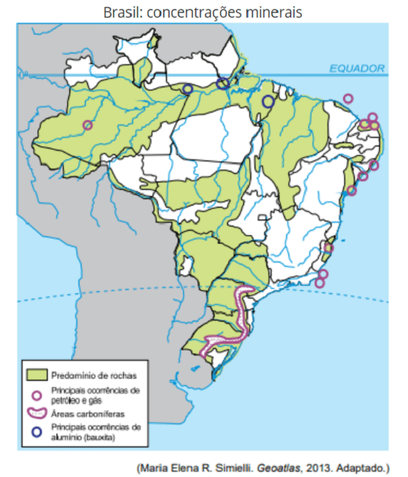
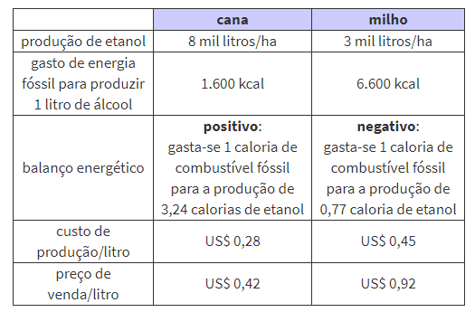
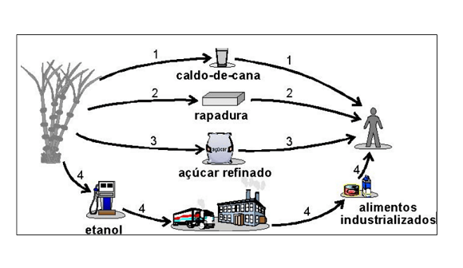

Conteúdo: Biomassa; Biocombustíveis; Proálcool; Biodiesel; Carvão vegetal; Bioenergia; Problemas ambientais.
Objetivo: Identificar e compreender à questão dos combustíveis fósseis e os agrocombustíveis no Brasil no atual período.
Questão 01
(URCA 2019) No ano de 2017 uma reportagem jornalística destacou que já foram instaladas mais de 500 torres de produção de energia elétrica, a partir da energia eólica (aerogeradores), com mais de 80 metros na Chapada do Araripe que engloba os estados do Piauí, Pernambuco e Ceará (beneficiando agricultores da região com o aluguel de terrenos e provocando alterações do ambiente local).
Em relação à produção da energia elétrica a partir da energia eólica no Brasil e particularmente no estado do Ceará aponte a alternativa incorreta.
a) A produção de energia elétrica a partir da energia dos ventos (eólica) é considerada uma energia renovável.
b) A energia elétrica produzida para o estado do Ceará é oriunda de diversas fontes, além da energia eólica, também de hidrelétricas, térmicas e fotovoltaica.
c) No Brasil a maior parte da energia elétrica, atualmente, é produzida por aerogeradores (energia eólica).
d) Em uma turbina eólica, o vento movimenta as pás que gira um rotor transmitindo a rotação ao gerador que transforma a energia mecânica em elétrica.
e) A energia eólica provoca impactos para o meio ambiente, por exemplo, ruídos para moradores próximos as torres, pode provocar mortes de aves que se chocam com as pás, etc.
Questão 02
(CEDERJ 2016) Os biocombustíveis, como o próprio nome já indica, são um tipo de combustível de origem biológica ou natural. Trata-se de uma fonte renovável de energia que é utilizada por meio da queima da biomassa ou de seus derivados, tais como o etanol, o biodiesel, o biogás, o óleo vegetal e outros. Atualmente, o Brasil possui uma produção de etanol que supera os 21,5 milhões de barris por ano. As perspectivas, segundo a Agência Internacional de Energia, é que essa produção aumente cerca de 200% até o ano de 2050, o que tornaria o Brasil uma referência internacional em biocombustíveis. As vantagens dos biocombustíveis são várias, mas também podem ser identificadas algumas desvantagens da produção desse tipo de combustível.
Disponível em: http://brasilescola.uol.com.br/geografia. Acesso em 24 abr. 2016. Adaptado.
Dentre as desvantagens da produção nacional dos biocombustíveis, identifica-se:
a) a redução dos índices de exportação.
b) o desestímulo à expansão da monocultura.
c) a incorporação de amplas áreas agricultáveis.
d) a retração dos preços de alimentos no mercado.
Comentário:
Podem ser identificadas algumas desvantagens desse tipo de combustível, como: a necessidade de amplas áreas agricultáveis, podendo intensificar o desmatamento pela expansão da fronteira agrícola; pressão sobre o preço dos alimentos, que podem ter sua produção diminuída para dar lugar à produção de biomassa; entre outros fatores.
Questão 03
(ENEM 2019) Em 2014, iniciou-se em São Paulo uma séria crise hídrica que também afetou o setor energético, agravada pelo aumento do uso de ar-condicionado e ventiladores. Com isso, intensifica-se a discussão sobre a matriz energética adotada nas diversas regiões do país. Sendo assim, há necessidade de se buscarem fontes alternativas de energia renovável que impliquem menores impactos ambientais.
Considerando essas informações, qual fonte poderia ser utilizada?
a) Urânio enriquecido.
b) Carvão mineral.
c) Gás natural.
d) Óleo diesel.
e) Biomassa.
Questão 04
(ENEM 2010)
“Responda sem pestanejar: que país ocupa a liderança mundial no mercado de etanol? Para alguns, a resposta óbvia é o Brasil. Afinal, o país tem o menor preço de produção do mercado, além de vastas áreas disponíveis para o plantio de matéria-prima. Outros dirão que são os EUA, donos da maior produção anual. Nos próximos anos, essa pergunta não deve gerar mais dúvida, pois a disputa não se dará em plantações de cana-de-açúcar ou nas usinas, mas nos laboratórios altamente sofisticados”.
TERRA, L. Conexões: estudos de geografia geral. São Paulo: Moderna, 2009 (adaptado)
A biotecnologia propicia, entre outras coisas, a produção dos biocombustíveis, que vêm se configurando em importantes formas de energias alternativas. Que impacto possíveis pesquisas em laboratórios podem provocar na produção de etanol no Brasil e nos EUA?
a) Aumento na utilização de novos tipos de matérias-primas para a produção do etanol, elevando a produtividade.
b) Crescimento da produção desse combustível, causando, porém, danos graves ao meio ambiente pelo excesso de plantações de cana-de-açúcar.
c) Estagnação no processo produtivo do etanol brasileiro, já que o país deixou de investir nesse tipo de tecnologia.
d) Elevação nas exportações de etanol para os EUA, já que a produção interna brasileira é maior que a procura, e o produto tem qualidade superior.
e) Aumento da fome em ambos os países, em virtude da produção de cana-de-açúcar prejudicar a produção de alimentos.
Questão 05
(ENEM 2008)
“O potencial brasileiro para gerar energia a partir da biomassa não se limita a uma ampliação do Proálcool.
O país pode substituir o óleo diesel de petróleo por grande variedade de óleos vegetais e explorar a alta produtividade das florestas tropicais plantadas. Além da produção de celulose, a utilização da biomassa permite a geração de energia elétrica por meio de termelétricas a lenha, carvão vegetal ou gás de madeira, com elevado rendimento e baixo custo.
Cerca de 30% do território brasileiro é constituído por terras impróprias para a agricultura, mas aptas à exploração florestal. A utilização de metade dessa área, ou seja, de 120 milhões de hectares, para a formação de florestas energéticas, permitiria produção sustentada do equivalente a cerca de 5 bilhões de barris de petróleo por ano, mais que o dobro do que produz a Arábia Saudita atualmente”.
José Walter Bautista Vidal. Desafios Internacionais para o século XXI. Seminário da Comissão de Relações Exteriores e de Defesa Nacional da Câmara dos Deputados, ago./2002 (com adaptações).
Para o Brasil, as vantagens da produção de energia a partir da biomassa incluem:
a) implantação de florestas energéticas em todas as regiões brasileiras com igual custo ambiental e econômico.
b) substituição integral, por biodiesel, de todos os combustíveis fósseis derivados do petróleo.
c) formação de florestas energéticas em terras impróprias para a agricultura.
d) importação de biodiesel de países tropicais, em que a produtividade das florestas seja mais alta.
e) regeneração das florestas nativas em biomas modificados pelo homem, como o Cerrado e a Mata Atlântica.
Questão 06
(CUSC 2020)

O mapa apresenta o predomínio de rochas do tipo
a) metamórfica, derivadas do acúmulo de sedimentos e ricas em materiais de origem orgânica.
b) sedimentar, originadas da recristalização mineral e submetidas a elevadas pressões e temperaturas em profundidade.
c) magmática, decorrentes da solidificação do magma e variadas quanto à granulometria de seus minerais.
d) sedimentar, formadas pela consolidação de sedimentos e propícias à presença de hidrocarbonetos.
e) metamórfica, constituídas por argilominerais solúveis e suscetíveis aos processos intempéricos.
Questão 07
(ENEM 2007) Texto e tabela para as questões 07 e 08:
“As pressões ambientais pela redução na emissão de gás estufa, somadas ao anseio pela diminuição da dependência do petróleo, fizeram os olhos do mundo se voltarem para os combustíveis renováveis, principalmente para o etanol. Líderes na produção e no consumo de etanol, Brasil e Estados Unidos da América (EUA) produziram, juntos, cerca de 35 bilhões de litros do produto em 2006. Os EUA utilizam o milho como matéria-prima para a produção desse álcool, ao passo que o Brasil utiliza a cana-de-açúcar. O quadro a seguir apresenta alguns índices relativos ao processo de obtenção de álcool nesses dois países ”.

Globo Rural, jun. 2007. (Com adaptações).
Se comparado com o uso do milho como matéria-prima na obtenção do etanol, o uso da cana-de-açúcar é:
a) mais eficiente, pois a produtividade do canavial é maior que a do milharal, superando-a em mais do dobro de litros de álcool produzido por hectare.
b) mais eficiente, pois gasta-se menos energia fóssil para se produzir 1 litro de álcool a partir do milho do que para produzi-lo a partir da cana.
c) igualmente eficiente, pois, nas duas situações, as diferenças entre o preço de venda do litro do álcool e o custo de sua produção se equiparam.
d) menos eficiente, pois o balanço energético para se produzir o etanol a partir da cana é menor que o balanço energético para produzi-lo a partir do milho.
e) menos eficiente, pois o custo de produção do litro de álcool a partir da cana é menor que o custo de produção a partir do milho.
Objetivo da questão: comparar o uso do milho e da cana-de-açúcar como matérias-primas na obtenção do etanol:
a) Correta. No quadro a produtividade do canavial (8 mil litros de etanol por hectare) é superior à do milharal (3 mil litros por hectare).
b) Incorreta. O quadro mostra que se gasta 1 caloria de combustível fóssil para se produzir 3,24 calorias de etanol de cana, ao passo que, com o milho, é preciso a mesma caloria original para apenas 0,77 caloria de etanol;
c) Incorreta. A eficiência é medida pelo preço de produção, e o da cana é muito menor;
d) Incorreta. O balanço energético a partir da cana é maior (positivo) do que o do milho (negativo), ao contrário do que diz a questão;
e) Incorreta. A produção de etanol menos eficiente é a partir do milho, já que o custo de produção é bem maior do que o da cana;
Questão 08
(ENEM 2007) Considerando-se as informações do texto, é correto afirmar que:
a) o cultivo de milho ou de cana-de-açúcar favorece o aumento da biodiversidade.
b) o impacto ambiental da produção estadunidense de etanol é o mesmo da produção brasileira
c) a substituição da gasolina pelo etanol em veículos automotores pode atenuar a tendência atual de aumento do efeito estufa.
d) a economia obtida com o uso de etanol como combustível, especialmente nos EUA, vem sendo utilizada para a conservação do meio ambiente.
e) a utilização de milho e de cana-de-açúcar para a produção de combustíveis renováveis favorece a preservação das características originais do solo.
A alternativa correta é a letra C, pois a utilização do etanol traz menores prejuízos ao meio ambiente do que a utilização da gasolina, combustível derivado do petróleo, que, quando é queimado, agrava ainda mais o efeito estufa.
Como você pôde notar nas duas questões, além da capacidade de interpretação, é preciso que o candidato domine alguns conceitos, como os de sustentabilidade, combustíveis fósseis e energias renováveis.
Questão 09
(ENEM 2007) Há diversas maneiras de o ser humano obter energia para seu próprio metabolismo utilizando energia armazenada na cana-de-açúcar. O esquema a seguir apresenta quatro alternativas dessa utilização.

A partir dessas informações, conclui-se que:
a) a alternativa 1 é a que envolve maior diversidade de atividades econômicas.
b) a alternativa 2 é a que provoca maior emissão de gás carbônico para a atmosfera.
c) as alternativas 3 e 4 são as que requerem menor conhecimento tecnológico.
d) todas as alternativas requerem trabalho humano para a obtenção de energia.
e) todas as alternativas ilustram o consumo direto, pelo ser humano, da energia armazenada na cana.
Questão 10
(ENEM 2005) A Lei Federal nº 11.097/2005 dispõe sobre a introdução do biodiesel na matriz energética brasileira e fixa em 5%, em volume, o percentual mínimo obrigatório a ser adicionado ao óleo diesel vendido ao consumidor.
De acordo com essa lei, biocombustível é “derivado de biomassa renovável para uso em motores a combustão interna com ignição por compressão ou, conforme regulamento, para geração de outro tipo de energia, que possa substituir parcial ou totalmente combustíveis de origem fóssil”.
A introdução de biocombustíveis na matriz energética brasileira:
a) colabora na redução dos efeitos da degradação ambiental global produzida pelo uso de combustíveis fósseis, como os derivados do petróleo.
b) provoca uma redução de 5% na quantidade de carbono emitido pelos veículos automotores e colabora no controle do desmatamento.
c) incentiva o setor econômico brasileiro a se adaptar ao uso de uma fonte de energia derivada de uma biomassa inesgotável.
d) aponta para pequena possibilidade de expansão do uso de biocombustíveis, fixado, por lei, em 5% do consumo de derivados do petróleo.
e) diversifica o uso de fontes alternativas de energia que reduzem os impactos da produção do etanol por meio da monocultura da cana-de-açúcar.
Correta: a) A principal função dos biocombustíveis é reduzir os impactos ambientais, a poluição.
b) A matéria-prima usada na produção de biodiesel deve ser fonte renovável de acordo com o artigo, sendo assim não irá provocar o desmatamento.
c) A biomassa não é inesgotável, vai ser renovável, o que quer dizer que é necessário a renovação dessas fontes.
d) A expansão de biocombustível deve ir além dos 5% fixado por lei, esta taxa é inicial tendo a perspectiva para um aumento gradativo, 5% é o mínimo obrigatório.
e) A cana-de-açúcar é a principal aliada para a produção de biodiesel, e outras fontes como óleo de babaçu são fontes alternativas.